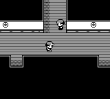

REAL GAME. AI AT THE CONTROLS.
Can AI play
Pokémon?
From picking a move to finding the next gym.
See how far the models get. Watch how they play.

GEN 1 / SHORT
PokeBench Gen 1 Short
Navigation, battles, menus, preparation, and quests.
How to read this
Scores average starts within task groups, then groups within each category, then the five categories equally. Preparation uses a fixed battle controller to assess the model's choices. Other tasks score completion. Pending trials and evaluation errors are excluded, not counted as failures.
The range under each score is a 95% bootstrap interval. It resamples tasks within each category 2,000 times and keeps the category weights. It shows how much the score depends on which tasks were chosen. It does not capture run-to-run luck, because each start was played once. Ranks are by point score.
Astra and Fable use the current interface and revised Mt. Moon, Pikachu capture, Bicycle, and scarce-resource League tasks. Earlier results are preserved. Models with unfinished trials are marked provisional. This is an exploratory comparison, with one attempt per registered start.
EXPLORE THE EVIDENCE
Every task. Every attempt.
GEN 1 / LONG
PokeBench Gen 1 Long
Start in the bedroom. Aim for the Hall of Fame.
Same starting save, tools, and medium reasoning effort. One run per model. Progress is scored out of 1,000.
Replays show recorded screenshots and decisions. They load only when opened. Long scores are separate from short-task scores.
THE BENCHMARK
A familiar game.
An unfamiliar player.
Models control Pokémon Red through an emulator. Short tasks isolate specific skills. Long runs test whether those skills hold together across an adventure.
Strategy tasks provide game information and mechanical shortcuts. Menu-operation tasks require the model to operate the controls. Every attempt has a decision and token budget.
Work in progress. Results span documented interface revisions.